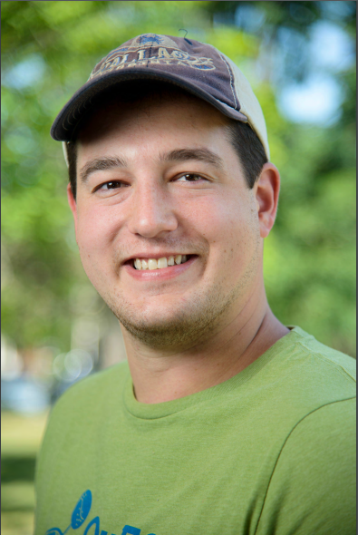
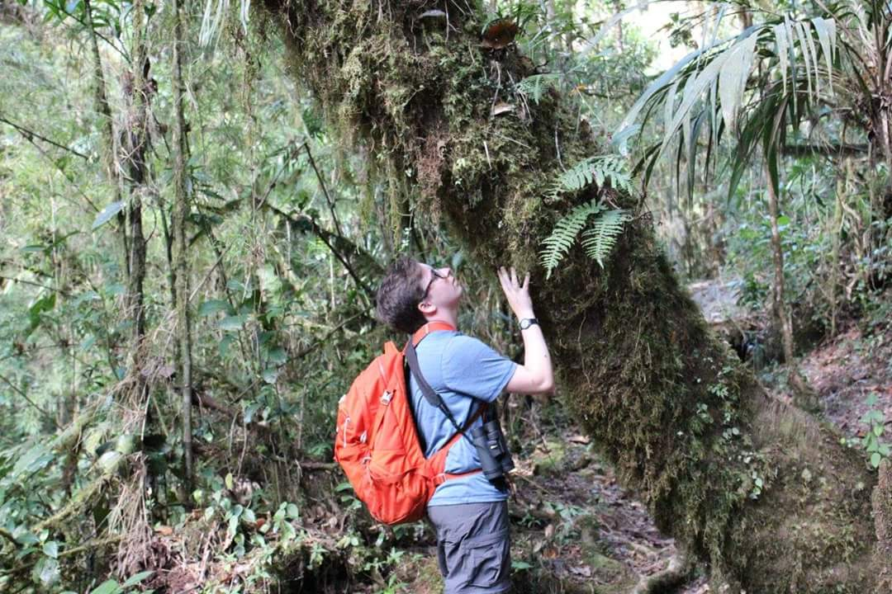
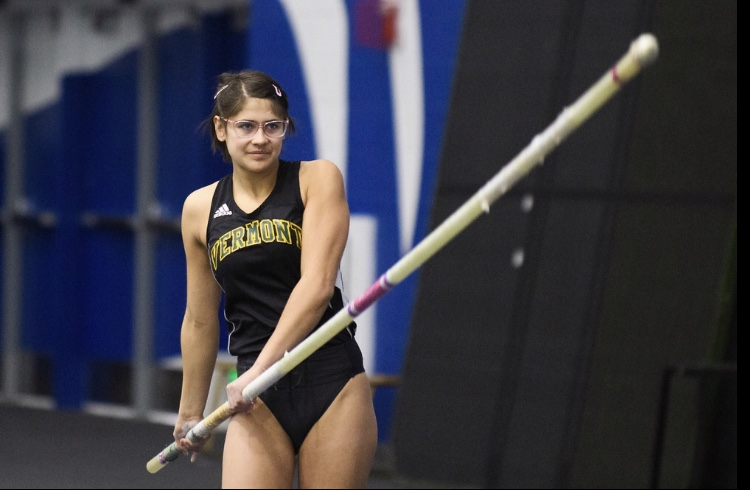

Helms/Helms Cahan Research Laboratory
Principal Investigators
Sara Helms Cahan, Ph.D
 I am an evolutionary ecologist interested in how physical and social environments shape the evolution of organismal traits. Much of my research program centers on social evolution in the eusocial Hymenoptera, particularly ants. My longest-running study system is the desert seed-harvester ant Veromessor pergandei, an excellent model for studying forces shaping social behavior because it is the only know species whose queens engage in three distinctive alternate social strategies during colony founding: single queens can start a new colony alone, or join up with unrelated co-foundresses in a temporary association that ends in lethal fighting, or form long-lasting polygynous relationships throughout the colony lifecycle. Extended cooperation is associated with harsher desert environments, suggesting that sociality permits persistence in the face of resource scarcity and unpredictability. In current work, we are reconstructing the evolutionary history of behaviorally divergent populations and investigating the genetic and functional bases of aggressive and cooperative behaviors.
A fascinating consequence of social evolution is that the social environment itself is both a response to and an agent of selection, with unique consequences for colony, population and species-level processes. We are exploring this interplay in ant species that display a remarkable mode of determination of the queen versus worker caste: social hybridogenesis. In hybridogenetic taxa, two distinct genetic lineages co-occur in the same habitats and interbreed with one another, but while F1 hybrids turn into workers and comprise the entirety of the colony workforce, reproductive queen daughters are produced from pure-lineage progeny. In our current projects, we are investigating the evolutionary origins of hybridogenetic systems, the selective forces that promote and maintain them, and the genetic basis of divergence in caste fate between hybrids and non-hybrids.
Finally, my most recent research projects concern how ectothermic insects cope with both cold and hot temperature extremes, with the goal of understanding the extent to which physiological acclimation and evolutionary adaptation underlie species thermal performance curves. Our model systems include the forest ant genus Aphaenogaster, an important dispersal agent for annual plants in eastern deciduous forests, as well as the genetic model organism, Drosophila melanogaster, and its wild congeners. This work is funded by NSF/EPSCoR, and is a collaboration with Drs. Brent Lockwood and Seth Frietze from UVM, Dr. Nick Teets from the University of Kentucky, Dr. Heather Axen from Salve Regina University, and Dr. James Waters from Providence College.
.
I am an evolutionary ecologist interested in how physical and social environments shape the evolution of organismal traits. Much of my research program centers on social evolution in the eusocial Hymenoptera, particularly ants. My longest-running study system is the desert seed-harvester ant Veromessor pergandei, an excellent model for studying forces shaping social behavior because it is the only know species whose queens engage in three distinctive alternate social strategies during colony founding: single queens can start a new colony alone, or join up with unrelated co-foundresses in a temporary association that ends in lethal fighting, or form long-lasting polygynous relationships throughout the colony lifecycle. Extended cooperation is associated with harsher desert environments, suggesting that sociality permits persistence in the face of resource scarcity and unpredictability. In current work, we are reconstructing the evolutionary history of behaviorally divergent populations and investigating the genetic and functional bases of aggressive and cooperative behaviors.
A fascinating consequence of social evolution is that the social environment itself is both a response to and an agent of selection, with unique consequences for colony, population and species-level processes. We are exploring this interplay in ant species that display a remarkable mode of determination of the queen versus worker caste: social hybridogenesis. In hybridogenetic taxa, two distinct genetic lineages co-occur in the same habitats and interbreed with one another, but while F1 hybrids turn into workers and comprise the entirety of the colony workforce, reproductive queen daughters are produced from pure-lineage progeny. In our current projects, we are investigating the evolutionary origins of hybridogenetic systems, the selective forces that promote and maintain them, and the genetic basis of divergence in caste fate between hybrids and non-hybrids.
Finally, my most recent research projects concern how ectothermic insects cope with both cold and hot temperature extremes, with the goal of understanding the extent to which physiological acclimation and evolutionary adaptation underlie species thermal performance curves. Our model systems include the forest ant genus Aphaenogaster, an important dispersal agent for annual plants in eastern deciduous forests, as well as the genetic model organism, Drosophila melanogaster, and its wild congeners. This work is funded by NSF/EPSCoR, and is a collaboration with Drs. Brent Lockwood and Seth Frietze from UVM, Dr. Nick Teets from the University of Kentucky, Dr. Heather Axen from Salve Regina University, and Dr. James Waters from Providence College.
.
Ken Helms, Ph.D
 Research in the Helms laboratory uses social insects as model systems to develop and test basic theory in ecology and evolution. The laboratory addresses questions of broad significance, often on large geographic scales. Projects range from the study of sex ratio evolution in social insects, to the importance of ecological interactions among invasive species, to studies of the evolution of cooperation, conflict and cooperative breeding. While we make extensive use of modern techniques from fields such as molecular genetics, phylogeography, and geographic information systems, our research is grounded in the importance of understanding the natural history of species in their environment.
Research in the Helms laboratory uses social insects as model systems to develop and test basic theory in ecology and evolution. The laboratory addresses questions of broad significance, often on large geographic scales. Projects range from the study of sex ratio evolution in social insects, to the importance of ecological interactions among invasive species, to studies of the evolution of cooperation, conflict and cooperative breeding. While we make extensive use of modern techniques from fields such as molecular genetics, phylogeography, and geographic information systems, our research is grounded in the importance of understanding the natural history of species in their environment.
Research Assistant
Katie Bora, BS, Laboratory Technician
 I am the lab technician in the Helms Cahan lab and have been in this position for over 4 years. I enjoy mentoring undergraduate, and to some degree, graduate students through their research in our lab. I have always been facinated with the scientific and natural world and throughly enjoy the oppourtunity to work on many diverse research projects with my colleagues and students.
I am the lab technician in the Helms Cahan lab and have been in this position for over 4 years. I enjoy mentoring undergraduate, and to some degree, graduate students through their research in our lab. I have always been facinated with the scientific and natural world and throughly enjoy the oppourtunity to work on many diverse research projects with my colleagues and students.
Doctoral Students
Jessica Cole
 I am generally interested in ecology and plant-pollinator interactions. My research aims to determine how wildflowers and environmental pesticides contribute to the exposure of pollinators to pesticides. I am also interested in determining ideal floral species to plant in contaminated soil that lower the exposure of pesticides to wild pollinators. On a broader scale, I am interested in the ecological impacts that humans and nature impose on wild pollinators. In the future, I would like to contribute to better conservation tactics to aid wild pollinators.
I am generally interested in ecology and plant-pollinator interactions. My research aims to determine how wildflowers and environmental pesticides contribute to the exposure of pollinators to pesticides. I am also interested in determining ideal floral species to plant in contaminated soil that lower the exposure of pesticides to wild pollinators. On a broader scale, I am interested in the ecological impacts that humans and nature impose on wild pollinators. In the future, I would like to contribute to better conservation tactics to aid wild pollinators.
Benjamin Camber

I am fascinated by the evolution of insects and the origins/mechanisms of their amazing life histories. I am currently studying the genetics of thermal limits in Drosophila, but my focus might shift towards social insect evolution in various ants. Eventually, I want to incorporate my interest in parasitoid wasp evolution and ecology into my research framework and figure out how they evolved to fill such complex and bizarre niches.
Lindsey Cathcart

I am a first year PhD student in the Helms Cahan lab. Always interested by the natural world, I am investigating the evolutionary history and ecological interactions of social insects in a diverse landscape. In particular, ants captivate me in how they use their complex sociality to overcome challenges in terrestrial environments.
Undergraduate Students in Honors College
Jhanavi Kapadia
 I am currently a senior Honors College student in the Helms Cahan Lab preparing to write my undergraduate thesis. I will be studying the effects of Proline and Allantoin on the cold tolerance of Aphaenogaster picea, a temperate ant species, as well as Drosophila melanogaster, a model organism, by employing cold shock treatments. Hopefully, my research will show how these insects handle harsh conditions as the climate changes to understand some of the adaptive strategies they use survive.
I am currently a senior Honors College student in the Helms Cahan Lab preparing to write my undergraduate thesis. I will be studying the effects of Proline and Allantoin on the cold tolerance of Aphaenogaster picea, a temperate ant species, as well as Drosophila melanogaster, a model organism, by employing cold shock treatments. Hopefully, my research will show how these insects handle harsh conditions as the climate changes to understand some of the adaptive strategies they use survive.
Jessica Wright
I am interested in looking at epigenetic modifications in response to stress in Drosophila, measured through changing levels in RNA expression. Specifically, I would like to determine whether there are any transgenerational responses to stress, and if so, over how many generations these epigenetic modifications can persist.
Marina Cannon

Pollinator decline is a serious threat to environmental and human health, and I am studying two factors that are possibly contributing to this decline. My research project focuses on the effects of diet and pesticide exposure on the microbes present in the gut of bumblebees. I am investigating this through DNA sequencing of the bee gut bacterial community.
Amara Chittenden
My research focuses on the interaction between two species of Pogonomyrmex harvester ants. In populations where these species interact with each other, one species consistently occurs at a higher frequency than the other. My honors thesis aims to explore this skew in frequency- does one species have an advantage over the other that we haven’t yet understood?
Isabel Kaplan
I am currently a junior working in the Helms Cahan lab. I am studying the effect that temperature shock has on the gene expression in the brains of Drosophila. I am looking at how gene expression is affected in the brains of adult Drosophila raised in varying temperatures and in adults that experience rapid temperature change. I will also be using data analysis to see changes in gene transcripts and how that would affect gene expression.